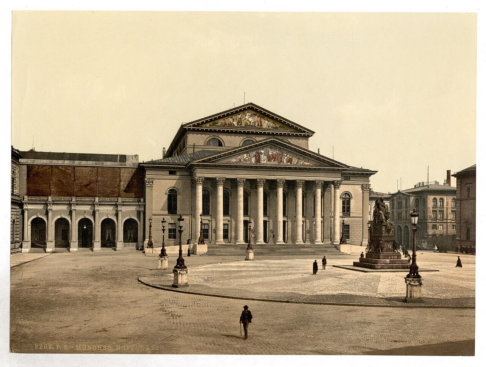

Welcome to your totally casual, completely non-suspicious walking experience through Munich. Absolutely none. Moving on.
We begin at Max-Joseph-Platz, where history stands very still and pretends it isn’t being watched by tourists pretending to be sophisticated. Opera house on one side, royal energy on the other. From there, we casually stroll into the Hofgarten. This is where people go to "just walk" and somehow end up contemplating life. The trees here are exceptionally good at making everything feel like a movie scene. Next stop: the Bayerische Staatskanzlei. The prime minister works here. At least that what he calls it. Finally, we arrive at the Platz der Weißen Rose. The mood shifts slightly here to "quiet reflection and respectful silence". And that’s it. A perfectly innocent stroll with historically questionable levels of charm, scenic distractions..
Back